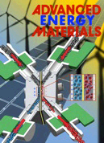

- Archival Journal Articles
- Book
- Book Chapters
- Peer-Reviewed Conference Procedings
- Conference Presentation, Abstracts and Posters
- Patent and Invention Disclosures
Archival Journal Articles
- Agar, E., *Knehr, K. W., Dennison, C. R., and Kumbur, E. C., 2013, " Identification of Performance Limiting Electrode using Asymmetric Cell Configuration in Vanadium Redox Flow Batteries," Journal of Power Sources, vol. 225, pp 89-94.

- Chen, D., Hickner, M. A., Agar, E., and Kumbur, E. C., 2013, "Selective anion exchange membranes for high coulombic efficiency vanadium redox flow batteries," Electrochemistry Communications, vol. 26, pp 37-40.
- Wargo, E. A., *Cecen, A., Schulz, V., Kalidindi S. R., and Kumbur, E. C., 2013, " Resolving macro- and micro-porous layer interaction in polymer electrolyte fuel cells using focused ion beam and x-ray computed tomography," Electrochimicia Acta, vol. 87, pp 201-212.
- *Knehr, K. W. and Kumbur, E.C., 2012 " Role of convection and related effects on species crossover and capacity loss in vanadium flow batteries," Electrochemistry Communications, vol. 23, pp 76-79
- *Qiu, Q., Dennison, C. R., *Knehr, K. W., Kumbur, E. C. and Sun Y., 2012, "Pore-scale analysis of effects of electrode morphology and electrolyte flow conditions in vanadium redox flow Batteries," Journal of Power Sources, vol. 219, pp. 223-234
- *Knehr, K. W., Agar, E., Dennison, C. R., *Kalidindi, A. R., and Kumbur, E. C., 2012, "A transient vanadium flow battery model incorporating species crossover and water transport in the membrane," Journal of Electrochemical Society, vol. 159, (9) pp. A1446-A1459
- Presser, V., Dennison, C. R., Compos, J., *Knehr, K. W., Kumbur E. C., and Gogotsi, Y. 2012, "The electrochemical flow capacitor: a new concept for rapid energy recovery and delivery," Advanced Energy Materials, vol. 2, pp 895-902 (cover article).
- *Qiu, Q., Joshi, A. S., Dennison, C. R., *Knehr, K. W., Kumbur, E. C. and Sun Y., 2012, "3-D pore-scale modeling of transport phenomena in a vanadium redox flow battery using x-ray tomography and the lattice Boltzmann method," Electrochemicia Acta, vol. 64, pp. 46-64.
- *Cecen, A., Wargo, E. A., Hanna, A. C., Turner, D., Kalidindi, S. R., and Kumbur E. C., 2012, " 3-D Microstructure analysis of fuel cell materials: spatial distributions of tortuosity, void size, and diffusivity," Journal of the Electrochemical Society, vol. 159 pp. B1-B9
- Wargo, E. A., Hanna, A. C., *Cecen, A., Kalidindi, S. R., and Kumbur E. C., 2012, "Selection of representative volume elements for pore scale analysis of transport in fuel cell materials," Journal of Power Sources, vol. 197, pp. 168-179
- *Knehr, K. W. and Kumbur, E. C., 2011, "Open circuit voltage of vanadium redox flow batteries: discrepancy between models and experiments," Electrochemistry Communications, vol. 13, pp. 342-345
- Swamy, T., Kumbur E. C. and Mench, M. M., 2011, "Investigation of bipolar plate and diffusion media interface: a fractal geometry approach," Electrochemica Acta, vol. 56, pp. 3060-3070
- Manahan, M. Jr., Hatzell, M. C., Kumbur, E. C., and Mench, M. M., 2011, Laser perforated fuel cell diffusion media Part I: Related changes in performance and water content," Journal of Power Sources, vol. 196, pp. 5573-5582.
- Bajpai, H., Khandelwal, M., Kumbur, E. C., and Mench, M. M., 2010, A computational model for assessing impact of interfacial morphology on polymer electrolyte fuel cell performance," Journal of Power Sources, vol. 195, pp. 4196-4205
- Hizir, F. E., Ural, S. O., Kumbur, E. C., and Mench, M. M., 2010, Characterization of interface morphology in PEFCs: Microporous layer and catalyst layer surfaces," Journal of Power Sources, vol. 195, pp. 363-3471
- Swamy, T., Kumbur E. C. and Mench, M. M., 2010, Characterization of interfacial structure in polymer electrolyte fuel cells: Water storage and contact resistance model, Journal of Electrochemical Society, vol. 157, pp. B77-B85
- Kumbur, E. C., Sharp, K. V., and Mench, M. M., 2008, A design tool for predicting the capillary transport characteristics of fuel cell diffusion media using an artificial neural network, Journal of Power Sources, vol. 176, pp. 191-199.
- Ramasamy, R. P., Kumbur, E. C., Mench, M. M., 2008, Investigation of micro and macro sub-layer interaction in porous gas diffusion electrodes of polymer electrolyte fuel cell," International Journal of Hydrogen Energy, vol. 33, pp. 3351-3367.
- Kumbur, E. C., Sharp, K. V., and Mench, M. M., 2007, On the effectiveness of the Leverett approach for describing the water transport in fuel cell diffusion media, Journal of Power Sources, vol.168, pp. 356-368.
- Kumbur, E. C., Sharp, K. V., and Mench, M. M., 2007, Validated Leverett approach for multi-phase transport in polymer electrolyte fuel cell porous media. Part 1: Hydrophobicity Effect, Journal of the Electrochemical Society, vol. 154 (12), pp. B1295-B1304.
- Kumbur, E. C., Sharp, K. V., and Mench, M. M., 2007, Validated Leverett approach for multi-phase transport in polymer electrolyte fuel cell porous media. Part 2: Compression Effect, Journal of the Electrochemical Society, vol. 154 (12), pp. B1305-B1314.
- Kumbur, E. C., Sharp, K. V., and Mench, M. M., 2007, Validated Leverett approach for multi-phase transport in polymer electrolyte fuel cell porous media. Part 3: Temperature Effect and Unified Approach, Journal of the Electrochemical Society, vol. 154 (12), pp. B1315-B1324.
- Kumbur, E. C., Sharp, K. V., and Mench, M. M., 2006, Liquid droplet behavior and instability in a polymer electrolyte fuel cell flow channel, Journal of Power Sources, vol. 161, pp. 333-345.
Book
- "Polymer Electrolyte Fuel Cell Degradation," 2011, Editors: Mench, M. M., Kumbur, E. C., and Veziroglu, T. N., Elsevier Publishing, Academic Press. ISBN: 978-0-12-386936-4
Book Chapters
- Kumbur, E. C., "Multi-phase flow in polymer electrolyte fuel cell porous media," M. M. Mench, 2008, FUEL CELL ENGINES, John Wiley and Sons Inc., New York, 2008, Edited Chapter 5, pp. 243-263.
- Kumbur E. C. , Mench M. M. "Water management in PEFCs" In: Juergen Garche, Chris Dyer, Patrick Moseley, Zempachi Ogumi, David Rand and Bruno Scrosati, editors. Encyclopedia of Electrochemical Power Sources, Vol 2. Amsterdam: Elsevier; 2009. pp. 828–847.
- Wargo A. E., Dennison, C. R., and Kumbur, E. C., 2011 "Durability aspects of polymer electrolyte fuel cells: status and target" In: Mench, M. M., Kumbur, E. C., and Veziroglu, T. N. editors. Polymer Electrolyte Fuel Cell Degradation, Elsevier Publishing, Academic Press. ISBN: 978-0-12-386936-4.
- Swamy, T. and Kumbur, E. C., 2011, "The role of interfaces on water management of PEM fuel cells," In: Hartnig,C. and Roth, C., editors: Polymer electrolyte membrane and direct methanol fuel cell technology, Woodhead Publishing, ISBN 1 84569 774 X
Peer-Reviewed Conference Procedings
- Wargo, E. A., Schulz, V. P., *Cecen, A., Kalidindi, S. R., and Kumbur, E. C., 2012, "Microstructure-driven analysis of two-phase transport in dual-layer diffusion media of PEFCs," Electrochemical Society Transactions, in press.
- Wargo, E. A., Hanna, A. C., *Cecen, A., Kalidindi, S. R., and Kumbur, E. C., 2011, "A Representative volume element approach for pore-Scale modeling of fuel cell materials," Electrochemical Society Transactions, vol. 41, pp. 131-139
- *Cecen, A., Wargo, E. A., Hanna, A. C., Turner, D. M., Kalidindi, S.R., and Kumbur, E. C., 2011, "Microstructure analysis tools for quantification of key structural properties of fuel cell materials," Electrochemical Society Transactions, vol. 41 pp. 679-687
- Swamy, T., Hizir, F. E., Ural S., Kumbur E. C., and Mench, M. M., 2009, "Interfacial morphology and contact resistance model for polymer electrolyte fuel cells," Electrochemical Society Transactions, vol. 25, pp. 15-27
- Bajpai, H., Khandelwal M., Kumbur E. C., and Mench, M. M., 2009, "Model to investigate interfacial morphology effects on polymer electrolyte fuel cell performance," Electrochemical Society Transactions, vol. 25, pp. 3-13
- Manahan, M. Jr., Kim., S., Kumbur E. C., and Mench, M. M., 2009, " Effects of surface irregularities and interfacial cracks on polymer electrolyte fuel cell performance," Electrochemical Society Transactions, vol. 25, pp. 1745-1754.
- Hizir F. E., Swamy, T., Ural S., Kumbur E. C., and Mench, M. M., 2009, " Characterization of microporous layer-catalyst layer interface structure in polymer electrolyte fuel cells", ASME FUELCELL2009-85092, proceedings of 7th ASME International Conference on Fuel Cell Science Engineering and Technology, June 8-10, Newport Beach, CA
- Kumbur, E. C., Sharp, K. V., and Mench, M. M., 2007, "An artificial neural network for capillary transport characterization of fuel cell diffusion media," Electrochemical Society Transactions-0540, vol. 11, pp. 675-682.
- Kumbur, E. C., Sharp, K. V., and Mench, M. M., 2007, "Capillary pressure-saturation behavior of carbon paper fuel cell diffusion media: a validated approach," Electrochemical Society Transactions-0540, vol. 11, pp. 683-692.
- Kumbur, E. C., Sharp, K. V., and Mench, M. M., 2006, "Factors impacting liquid droplet instability in a polymer electrolyte fuel cell flow channel," ASME FUELCELL2006-97041, proceedings of 4th ASME International Conference on Fuel Cell Science Engineering, June 17-19, Irvine CA.
Conference Presentation, Abstracts and Posters
- Qiu, Q., Andersen, C., Joshi, A. S., Dennison, C. R., *Knehr, K. W., Kumbur, E. C. and Sun Y., 2012, " 3D pore-scale resolved transport model for vanadium redox flow batteries," ASME international Mechanical Engineering Congress and Exposition, ASME IMECE2012-93787. November 9-15, Houston, TX, USA.
- Agar, E., Dennison, C. R.,*Kalidindi, A. R., *Knehr, K. W., Kumbur, E. C., 2012, "Investigation of Functionalized Electrode Performance in Vanadium Redox Flow Batteries," 2012 MRS Fall Meeting, November 25-30, Boston, Massachusetts.
- *Knehr, K. W., Agar, E. A., Dennison, C. R., *Kalidindi, A. R., Kumbur, E .C., 2012, "Reducing Capacity Loss in Vanadium Redox Flow Batteries by Controlling Convective Transport Across the Membrane," 2012 MRS Fall Meeting, November 25-30, Boston, Massachusetts.
- Dennison, C. R., Presser, V., Compos, J., *Knehr, K. W., Kumbur E. C., and Gogotsi, Y. 2012, " Electrochemical flow capacitors: a new concept for high-power scalable energy storage," 222nd Electrochemical Society Meeting, Hawaii Oct 7-12.
- *Knehr, K. W., Agar, E., *Kalidindi, A. R., Dennison, C. R., Chen, D., Hickner, M. A. and Kumbur, E. C., 2012, "Role of Membrane properties on species crossover and capacity loss of a vanadium redox flow battery," 222nd Electrochemical Society Meeting, Hawaii Oct 7-12.
- Wargo, E. A., Schulz, V. P., *Cecen, A., Kalidindi, S. R., and Kumbur, E. C., 2012, "Advanced microstructural analysis tools to quantify two-phase transport in gas diffusion layers of polymer electrolyte fuel cells," 244th American Chemical Society Annual Meeting, August 19-23, Philadelphia.
- Agar, E., *Knehr, K. W., *Kalidindi, A. R., Dennison, C. R., and Kumbur, E. C., 2012, "Reaction kinetics of vanadium species on functionalized carbon-felt electrodes of vanadium redox flow batteries," 244th American Chemical Society Annual Meeting, August 19-23, Philadelphia.
- *Knehr, K. W., Agar, E., *Kalidindi, A. R., Dennison, C. R., and Kumbur, E. C., 2012, "Performance modeling of redox flow batteries," 244th American Chemical Society Annual Meeting, August 19-23, Philadelphia. (invited).
- Dennison, C. R., Presser, V., Campos, J., *Knehr, K. W., Kumbur, E. C., and Gogotsi, Y., 2012, "The electrochemical flow capacitor - a new approach to grid-scale energy storage," 244th American Chemical Society Annual Meeting, August 19-23, Philadelphia.
- Campos, J., Presser, V., Dennison, C.R., *Knehr, K. W., Kumbur, E. C., and Gogotsi, Y., 2012, "Investigation of electrode materials for electrochemical flow capacitors," 244th American Chemical Society Annual Meeting, August 19-23, Philadelphia.
- Kotaka, T., Shiomi, T., Oaki, A., kubo, N., Tabuchi, Y., Wargo, E. A., Kalidindi, S. R., and Kumbur, E. C., 2012, "Transport analysis based on microstructure of the porous layers in PEFCs", Gordon Fuel Cell Research Conference, August 5-10, Smithfield, RI.
- *Knehr, K. W., Agar, E., *Kalidindi, A. R., Dennison, C. R., and Kumbur, E. C., 2012, " A computational model for quantification of species crossover and related losses in vanadium redox flow batteries," ASME 6th Conference on Energy Sustainability, San Diego, California July 23-26.
- Wargo, E. A., Schulz, V., *Cecen, A., Kalidindi, S. R., and Kumbur, E. C., 2012, "Characterization of two-phase flow properties of dual-layer PEFC gas diffusion electrodes via microstructure analysis and pore-scale modeling," ASME 10th International Fuel Cell Science, Engineering & Technology Conference, San Diego, California July 23-26..
- Campos, J., Presser, V., Dennison, C. R., *Knehr, K. W., Kumbur, E. C., and Gogotsi, Y., 2011, " The electrochemical flow capacitor: a new technology for stationary storage of electrical energy," Gordon Research Conference on Electronic Processes in Organic Materials, June 8-12, Lucca, Italy.
- Wargo, E. A., Schulz, V. P., *Cecen, A., Kalidindi, S. R., and Kumbur, E. C., 2012, "Microstructure and two-phase flow analysis of gas diffusion electrodes of polymer electrolyte fuel cells," 19th World Hydrogen Energy Conference, June 3-7, Toronto Canada.
- Agar, E. A., *Knehr, K. W., *Kalidindi, A. R., Dennison, C. R., and Kumbur, E. C., 2012, "Multi-ionic transport and effects of crossover in vanadium redox flow batteries," 221st Electrochemical Society Meeting, May 6-11, Seattle, Washington
- *Kalidindi, A.R., and Kumbur, E.C., 2012, "Reaction kinetics of vanadium species on carbon felt electrodes," National Collegiate Research Conference, January 19-21, Cambridge, Massachusetts.
- *Kalidindi, A.R., and Kumbur, E. C., 2012, "Investigation of electrolyte crossover in vanadium redox flow batteries," National Conference for Undergraduate Research, March 29-31, Ogden, Utah.
- *Knehr, K. W., Agar, E., Dennison, C. R., *Kalidindi, A. R., Kumbur, E. C., 2011, "Modeling Species crossover and related effects on the performance of a vanadium redox flow battery", The foruth International Forum on Multidisciplinary Education and Research for Energy Science, December 17-21, 2011, Honolulu, Hawaii (invited).
- Dennison, C. R., *Kalidindi, A. R., Biel-Gobel, J. J., Commons, W., Agar, E. A., *Knehr, K. W.,and Kumbur, E. C., 2011. "Ionic transport and kinetic processes in vanadium redox flow batteries", The fourth International Forum on Multidisciplinary Education and Research for Energy Science, December 17-21, 2011, Honolulu, Hawaii. (invited).
- Campos, J., Dennison, C. R., *Knehr, K. W., C. Biel-Goebel, J., Presser, V., Kumbur, E. C., and Gogotsi, Y., 2011, " An energy problem bottleneck solution: capacitor component integration and characterization," 14th Annual Philadelphia AMP Research Symposium and Mentoring Conference, Philadelphia, PA (Best Presentation Award).
- Wargo, E. A., Hanna, A. C., *Cecen,A., Kalidindi, S.R., and Kumbur, E. C., 2011, "A new approach for quantification of morphology-property linkages In fuel cell materials: a case study for PEM fuel cells,", AIChE Annual Meeting, October 25, Minneapolis.
- Agar, E., *Knehr, K. W., Dennison, C. R., and Kumbur, E. C., 2011, ""Component and performance analysis of vanadium redox flow batteries: experimental and modeling studies," AIChE Annual Meeting, October 25, Minneapolis (invited).
- Agar, E., *Knehr, K. W., and Kumbur, E. C., 2011, "Simulating performance and species crossover in a vanadium redox flow battery using COMSOL Multiphysics," COMSOL Conference, October 13-15, Boston Massachusetts.
- Agar, E., *Knehr, K. W., Dennison, C. R., and Kumbur, E. C., 2011, ""Investigation of performance limiting issues in vanadium redox flow batteries: a macroscopic modeling approach," 220th ECS Meeting & Electrochemical Energy Summit, Oct 9-14, Boston, MA..
- Wargo, E. A., Hanna, A. C., *Cecen, A., Johnson, C. L., Kalidindi, S. R. and Kumbur, E. C., 2011, "Focused ion beam tomography of diffusion media for fuel cells. Microscopy & Microanalysis, vol. 17, Supplement 2, Aug 7- 11, Nashville, Tennessee.
- Dennison, C. R., *Knehr, K. W., *Commons, W., Agar, E. and Kumbur, E. C., 2011, "Characterization of electrode and cell potential in vanadium redox flow batteries," 5th ASME International Conference on Energy Sustainability, August 7-10, Washington DC.
- Wargo, E. A., Hanna, A. C., *Cecen, A., Kalidindi, S. R., and Kumbur, E. C., 2011, "A new approach for microstructure characterization of porous fuel cell materials," 9th ASME International Conference on Fuel Cell Science, Engineering and Technology, August 7-10, Washington DC.
- Manahan, M. Jr., Hatzell, M., Kumbur, E. C., and Mench, M. M., 2011, "Laser perforated diffusion media," 9th ASME International Conference on Fuel Cell Science, Engineering and Technology, August 7-10, Washington DC.
- *Cecen A., Wargo, E. A., Hanna, A. C., Kalidindi, S. R., and Kumbur, E. C., 2011, "Determination of Key Structural Parameters of Fuel Cell Porous Media through Microstructure Quantification," 9th ASME International Conference on Fuel Cell Science, Engineering and Technology, August 7-10, Washington DC.
- *Qang, Q., Joshi, A. S., Dennison, C. R., Kumbur, E. C., and Sun, Y., 2011 "Modeling the micro-structural properties and performance of a vanadium redox flow battery", 9th ASME International Conference on Energy Sustainability, August 7-10, Washington DC.
- Joshi, A. S., Dennison, C. R., Kumbur, E. C., and Sun, Y., 2011 "Effects of assembly-induced compression on the performance of a vanadium redox flow battery", 219th Electrochemical Society Meeting, May 1-6, 2011, Montreal, Canada.
- Dennison, C. R., *Knehr K. W., and Kumbur, E. C., 2010. "Open circuit voltage and effects of electrode compression in vanadium redox flow batteries," Third International Forum on Multidisciplinary Education and Research for Energy Science, Dec 09-14 Ishigaka, Tokyo Institute of Technology COE Program, Japan. Best Presentation Award (invited).
- Wargo, E. A., Hanna A. C., *Cecen, A., Kalidindi, S. R., and Kumbur, E. C., 2010. "Microstructure characterization of micro-porous layer in PEM fuel cells," The Third International Forum on Multidisciplinary Education and Research for Energy Science, Dec 09-14 Ishigaka, Tokyo Institute of Technology COE Program, Japan (invited).
- Joshi, A., Kumbur, E. C., and Sun, Y., 2010, "Pore-scale modeling of transport phenomena in a vanadium redox battery using x-ray tomography and the lattice Boltzmann method," 63rd Annual Meeting of the APS Division of Fluid Dynamics, vol. 55, number 6, Nov 21-23, Long Beach, CA (Abstract+Presentation).
- Manahan, M. Jr., Hizir, F. E., Kumbur, E. C., and Mench, M. M., 2010, "Perforated interface structure and related changes in fuel cell performance," 8th ASME International Conference on Fuel Cell Science Engineering and Technology, June 14-16, Brooklyn New York.
- Mench, M. M., and Kumbur, E. C., 2010, "Advanced fuel cell modeling," 17th World Hydrogen Energy Conference, Essen Germany, May 16-19 Essen, Germany (invited).
- Swamy T., Khandelwal M., Manahan, M. P., Hizir, F. E., Kumbur, E. C., and Mench, M. M., 2009, "Characterization of MPL|CL interfacial morphology in polymer electrolyte fuel cells", Presentation, Second International Forum on Multidisciplinary Education and Research for Energy Science, Dec 13-18- Okinawa, Tokyo Institute of Technology COE Program, Japan (invited).
- Manahan, M. P., Bajpai, H., Kumbur, E. C., and Mench, M. M., 2009, "Effect of CL|MPL Interfacial Morphology on PEFC Performance," Fuel Cells: Materials, Challenges and Breakthroughs, University of Pennsylvania, September 26, Philadelphia USA.
- Hizir, F. E., Swamy, T., Kumbur, E. C., and Mench, M. M., 2009, "Interfacial Contact Model and Surface Characterization in PEFCs," Fuel Cells: Materials, Challenges and Breakthroughs, University of Pennsylvania, September 26, Philadelphia USA.
- Kumbur, E. C., Sharp, K. V., and Mench, M. M., 2008, "An updated approach for describing the transport in polymer electrolyte fuel cell porous diffusion media", Presentation, First International Forum on Multidisciplinary Education and Research for Energy Science, Dec 14-17, Tokyo Institute of Technology COE Program, Japan.
- Hizir F. E., Ural S., Kumbur E. C. and Mench, M. M., 2008, " Digital characterization of micro porous layer-catalyst layer interface structure in polymer electrolyte fuel cells", First International Forum on Multidisciplinary Education and Research for Energy Science, Dec 14-17, Tokyo Institute of Technology COE Program, Japan Best Presentation Award.
- Swamy T., Khandelwal M., Kumbur E. C. and Mench, M. M., 2008, " Model for prediction of compressed surface morphology between electrode and diffusion media in polymer electrolyte fuel cells", Presentation, First International Forum on Multidisciplinary Education and Research for Energy Science, Dec 14-17, Tokyo Institute of Technology College of Engineering Program, Japan.
- Khandelwal M., Bajpai H., Kim S., Kumbur E. C. and Mench, M. M., 2008, " The impact of interfacial discontinuities on the operating temperature and current profile in an operating polymer electoryle fuel cell", Presentation, First International Forum on Multidisciplinary Education and Research for Energy Science, Dec 14-17, Tokyo Institute of Technology COE Program, Japan.
- Ramasamy, R. P., Khandelwal, M., Kumbur, E. C., and Mench, M. M., 2007, "Experimental determination of diffusion coefficient of water in PEFC membrane at low temperatures," 211th Electrochemical Society Meeting, October 7-12, Washington DC .
- Kumbur, E. C., Sharp, K. V., and Mench, M. M., 2007, "Capillary transport characterization of thin-film fuel cell media: A modified Leverett approach," ASME FUELCELL2007-25085, Presentation, 5th International Conference on Fuel Cell Science Engineering and Technology, June 18-20, New York .
- Kumbur, E. C., Sharp, K. V., and Mench, M. M., 2007, "The role of compression on multi-phase transport characteristics of thin-film fuel cell media with mixed wettability," ASME FUELCELL2007-25085, Presentation, 5th International Conference on Fuel Cell Science Engineering and Technology, June 18-20, New York.
- Kumbur, E. C., Sharp, K. V., and Mench, M. M., 2007, "Design tool for predicting the multi-phase transport characteristics of fuel cell diffusion media using artificial neural network," Presentation , 211th Electrochemical Society Meeting, October 7-12, Washington DC.
- Kumbur, E. C., Sharp, K. V., and Mench, M. M., 2007, "A validated modified Leverett approach for describing the capillary transport in carbon-fiber based fuel cell diffusion media," Presentation, 211th Electrochemical Society Meeting, October 7-12, Washington DC.
- Kumbur, E. C., Sharp, K. V., and Mench, M. M., 2007, " A unified physical model for capillary transport in thin-film fuel cell diffusion media with mixed wettability," Poster Presentation, Gordon Research Conferences on Fuel Cells, Bryant University, July 22-27, Smithfield RI.
- Khandelwal, M., Kumbur, E. C., Sharp, K. V., and Mench, M. M., 2006, "Interfacial and bulk thermal and mass transport parameters in fuel cell media," Presentation, 210th Electrochemical Society Meeting, October 29 Cancun, Mexico.
- Kumbur, E. C., Khandelwal, M., Sharp, K. V., and Mench, M. M., 2006, "Thermal and mass transport characterization of polymer electrolyte fuel cell," Poster Presentation, 3rd Hydrogen Day The Pennsylvania State University, November 14, University Park, PA.
- Dong, Q., Kumbur, E. C., Kull, J, Shields, D., and Mench, M. M. 2004. Distributed Dynamics of Water Vapor and Other Gas-Phase Species in Polymer Electrolyte Fuel Cells. Presented at the 205th Electrochemical Society Meeting, San Antonio, TX.
Patent and Invention Disclosures
- Gogotsi Y., Presser V., Kumbur, E. C., 2011 "The electrochemical flow capacitor: A new concept of rapid energy recovery & delivery", Non-Provisional Patent: PCT/US2012/024960
- Mench, M. M., Ray, A., Chin, S., and Kumbur, E. C., 2007 "Rapid response sensor for low-level carbon monoxide in an operating PEFC", The Pennsylvania State University, Patent Application No: United States 20070166585, International Patent Application No. WO/2007/087271 (Pending).
